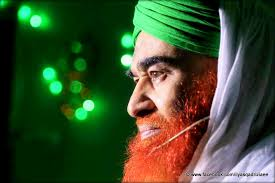
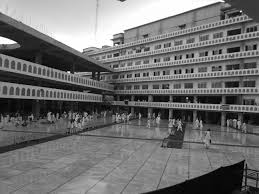
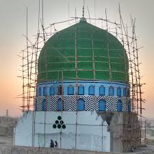
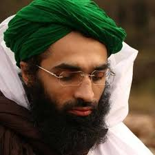
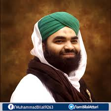
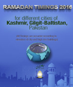
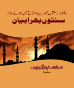
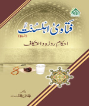

Muhammad Ilyas Qadri ( محمد الياس عطار قادرى)
Muhammad Ilyas Qadri ( محمد الياس عطار قادرى) is a Pakistani cleric and a founder[1] of Dawat-e-Islami - a Dawah movement, aimed at the preaching of Islam. Molana Ilyas Attar Qadri founded Dawat-e-Islami in 1981 in Karachi, Pakistan. He currently acts as the head of the foundation and runs various TV programs based on his religious sermons. Two most significant activities of Dawat-e-Islami, whose Karachi headquarters are called Faizaan-e-Madina,also known as Jamia-tul-Madina are known as Madani Qafila (missionary travel) and Madani Inamaat (self assessment). Dawat-e-Islami also operates its own non-commercial television channel, the Madani Channel, which only broadcasts Islamic programmes and the activities of the outfit 24 hours a day. The programmes broadcast include Hamd, Na`at, sermons, and question-answer. [2]

Welcome To my Web Page.....
History
Allama Arshadul Qaudri and Islamic scholar Shah Ahmad Noorani, since 1973 head of the Jamiat Ulema-e-Pakistan (JUP), were early supporters of Da´wat-e Islāmī. Along with other Pakistani Sunni ulemā they selected Muhammad Ilyas Qadri, who was the then Punjab president of Anjuman Tulaba-ye Islām, JUP´s youth wing, 23 as its head at Dār-ul ´ulūm Amjadia.[5][6] The group has become known for wearing green turbans.[7] Dawat-e-Islami has presence in almost 195 countries of the world and has established Jamia-tul-Madina (Islamic centres) in Pakistan, India and in other countries.[8] Faizan-e-Madinah in Karachi In 2006, 29 women and children died in the crush of people attempting to exit one of the weekly DI events. [9] Several years earlier, one of the few access roads from the Karachi center had been turned into a park by government officials and DI had been petitioning for a reopening of the road since 2002 to help facilitate the traffic flow of the estimated weekly attendance of 20,000-25,000.[10] An inquest found that the building had been filled over capacity for the Rabiul Awwal event, the basement where the women attended had only one exit, and a bomb hoax had caused a stampede.[11] The following year, an additional 30 worship sites were set up around the city to reduce the concentration of the crowds.[11] Dawat-e-Islami has expanded to the United Kingdom around 1995 holding its first Ijtima (Weekly Congregation) in Halifax. As of December 2014, it now has at least 24 properties in the United Kingdom which are used as a network of Masajid, Madrassahs, Islamic Schools and/or Jamias in order to create future scholars. Some buildings have been completed and others are being worked upon. Around 10,000 British Muslims are in some form or the other associated with Dawat-e-Islami in UK.[12][13][14] Dawat-e-Islami operates five centers in Greece and three in Spain.[15] In 2009, a madrassa was opened in Rotherham England for the education of young children and adults. In Athens, it has association with local Sufis and has established four centers.[16] Dawat-e-Islami USA has centers in Chicago, Texas and California.[17] Dawat-e-Islami is also prominent in Africa with established centres in Kenya, Tanzania, Uganda, South Africa, and Madagascar are just a few among many countries in Africa. In Bangladesh, Dawat-e-Islami led Jamia-tul- Madina has produced scholars who are serving in United Kingdom.Faizan-e-Madinah in Karachi In 2006, 29 women and children died in the crush of people attempting to exit one of the weekly DI events. [9] Several years earlier, one of the few access roads from the Karachi center had been turned into a park by government officials and DI had been petitioning for a reopening of the road since 2002 to help facilitate the traffic flow of the estimated weekly attendance of 20,000-25,000.[10] An inquest found that the building had been filled over capacity for the Rabiul Awwal event, the basement where the women attended had only one exit, and a bomb hoax had caused a stampede.[11] The following year, an additional 30 worship sites were set up around the city to reduce the concentration of the crowds.[11] Dawat-e-Islami has expanded to the United Kingdom around 1995 holding its first Ijtima (Weekly Congregation) in Halifax. As of December 2014, it now has at least 24 properties in the United Kingdom which are used as a network of Masajid, Madrassahs, Islamic Schools and/or Jamias in order to create future scholars. Some buildings have been completed and others are being worked upon. Around 10,000 British Muslims are in some form or the other associated with Dawat-e-Islami in UK.[12][13][14] Dawat-e-Islami operates five centers in Greece and three in Spain.[15] In 2009, a madrassa was opened in Rotherham England for the education of young children and adults. In Athens, it has association with local Sufis and has established four centers.[16] Dawat-e-Islami USA has centers in Chicago, Texas and California.[17] Dawat-e-Islami is also prominent in Africa with established centres in Kenya, Tanzania, Uganda, South Africa, and Madagascar are just .Dawat-e-Islami is also prominent in Africa with established centres in Kenya, Tanzania, Uganda, South Africa, and Madagascar are just a few among many countries in Africa. In Bangladesh, Dawat-e-Islami led Jamia-tul- Madina has produced scholars who are serving in United KingdomDawat-e-Islami is also prominent in Africa with established centres in Kenya, Tanzania, Uganda, South Africa, and Madagascar are just a few among many countries in Africa. In Bangladesh, Dawat-e-Islami led Jamia-tul- Madina has produced scholars who are serving in United Kingdom.
 Haji Imran Attari is the Nigran (incharge) of Markazi Majils e Shora (Central Committe) of Dawat e Islami. and He is wakeel of Ameer e Ahlesunnat Ilyas Qadiri damatbarkatuhum aliya ie He is allowed to bait anyone from Amir e Ahlesunnat.
Haji Imran Attari is the Nigran (incharge) of Markazi Majils e Shora (Central Committe) of Dawat e Islami. and He is wakeel of Ameer e Ahlesunnat Ilyas Qadiri damatbarkatuhum aliya ie He is allowed to bait anyone from Amir e Ahlesunnat.
Mushtaq Qadri was born on 18th of the month of Ramadan, 1386 A.H. (approximately 31 December 1966), in Banoon Sarhad, Pakistan. His father's name was Akhlaq Ahmad. Before permanently moving to Karachi, he lived in Faisalabad.[citation needed] In 1991 Mushtaq Qadri got married. His nikah (matrimonal ceremony) was conducted by his mentor Muhammad Ilyas Qadri. He has four children: Obaid Raza Attari; Abdul Mustafa Attari; Faizan Attari; and Ashfaq Attari
Shahzada e Shaikh e Tareeqat Ameer e Ahle Sunnat Maulana Ilyas Qadri Haji Ubaid Raza Attari Shahzada e Shaikh e Tareeqat Ameer e Ahle Sunnat Maulana Ilyas Qadri Haji Ubaid Raza Attari Shahzada e Shaikh e Tareeqat Ameer e Ahle Sunnat Maulana Ilyas Qadri Haji Ubaid Raza Attari
Shahzada e Shaikh e Tareeqat Ameer e Ahle Sunnat Maulana Ilyas Qadri Haji Bilal Raza Attari Shahzada e Shaikh e Tareeqat Ameer e Ahle Sunnat Maulana Ilyas Qadri Haji Bilal Raza Attari Shahzada e Shaikh e Tareeqat Ameer e Ahle Sunnat Maulana Ilyas Qadri Haji Bilal Raza Attari
Rukne Shurah Haji Abdul Habib Attari Rukne Shurah Haji Abdul Habib Attari he is the great person of Dawat e Islami most bayan is papolar in Dawat e Islami.
Ramadan Timing
Ramzan ki Timing kai Hawalai Sai Mayanaaz kitab App Khud bhi Paryai or Dosro ko b Parhaiyai
Sunnat o Bhara Bayan
Hafta Waar Sunnat o Bhara Bayan Jis Mai App Ki Shirkat Bais e Fakhar Hai Aap Khud B Aain Or Dosrai Awam.
Fataw e Ahlesunnat
Fatawa e Ahlesunnat Dini Masala Masail Kai Hawalai Sai Mayanaz Kitab Ahlesunnat Ki Pehchan